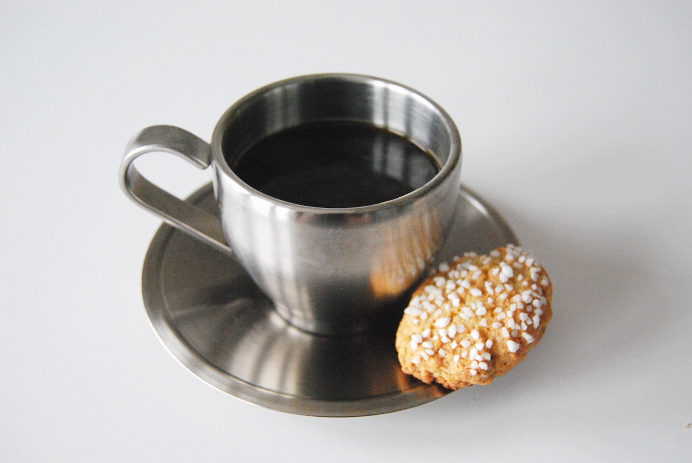

Svenska Fikadagar

Om Kaffedagen

Många förknippar fika med kaffe, men vi dricker kaffe till mer än bara fika. Vi svenskar är faktiskt näst bäst i världen på att dricka kaffe med ett snitt på 3,2 koppar per person och dag. Här är lite fakta om kaffet och dess dag.
Datum:
29e september varje år.
Hur började det? Det svenska firandet av kaffedagen instiftades av SCAE Swedish Chapter och firades för första gången år 2012. Detta är samma datum som International Coffee Day.
Kaffets historia: Kaffet tros ha sitt ursprung från Etiopien. Den första dokumentationen av kaffedrickande kommer dock från Jemen på den Arabiska halvön på 1500-talet. Sverige började importera kaffe på 1680-talet då det började säljas som medicin på apotek. Under mitten av 1800-talet blev det en populär dryck bland folket.
Fun fact: De nordisk länderna dricker mest kaffe i världen. Finländarna dricker mest med ca 9,9 kg om året. Detta motsvarar 3,5 koppar om dagen per person. Svenskar kommer på andra plats med 3,2 koppar om dagen. Delad tredjeplats går till Danmark och Norge, med 3,1 koppar per person.
Hur började det? Det svenska firandet av kaffedagen instiftades av SCAE Swedish Chapter och firades för första gången år 2012. Detta är samma datum som International Coffee Day.
Kaffets historia: Kaffet tros ha sitt ursprung från Etiopien. Den första dokumentationen av kaffedrickande kommer dock från Jemen på den Arabiska halvön på 1500-talet. Sverige började importera kaffe på 1680-talet då det började säljas som medicin på apotek. Under mitten av 1800-talet blev det en populär dryck bland folket.
Fun fact: De nordisk länderna dricker mest kaffe i världen. Finländarna dricker mest med ca 9,9 kg om året. Detta motsvarar 3,5 koppar om dagen per person. Svenskar kommer på andra plats med 3,2 koppar om dagen. Delad tredjeplats går till Danmark och Norge, med 3,1 koppar per person.